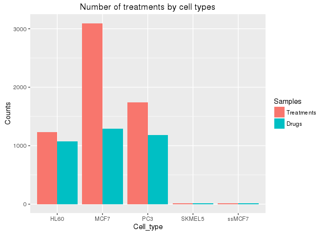
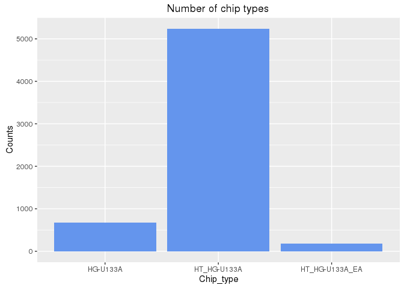

The single-page R markdown vignette of this workflow is here.
Introduction
This vignette is part of the NIA funded Longevity Genomics project. For more information on this project please visit its
website here. The GitHub repository of the corresponding R package
is available here and the most recent version of this
vignette can be found here.
The project component covered by this vignette analyzes drug- and age-related
genome-wide expression data from public microarray and RNA-Seq experiments. One
of the main objective is the identification drug candidates modulating the
expression of longevity genes and pathways. For this, we compare age-related
expression signatures with those from drug treamtments. The age-related query
signatures are from recent publications such as Peters et al. [-@Peters2015-fc]
and Sood et al. [-@Sood2015-pb], while the drug-related reference signatures
are from the Connectivity Map (CMAP) and LINCS projects [@Lamb2006-uv].
[Back to Table of Contents]()
Getting Started
Installation
The R software for running longevityTools can be downloaded from CRAN. The longevityTools package can be installed from the R console using the following biocLite install command.
r
source("http://bioconductor.org/biocLite.R") # Sources the biocLite.R installation script
biocLite("tgirke/longevityTools", build_vignettes=FALSE) # Installs package from GitHub
[Back to Table of Contents]()
Loading package and documentation
r
library("longevityTools") # Loads the package
library(help="longevityTools") # Lists package info
vignette(topic="longevityTools_eDRUG", package="longevityTools") # Opens vignette
[Back to Table of Contents]()
Setup of working environment
Import custom functions
Preliminary functions that are still under developement, or not fully tested and documented
can be imported with the source command from the inst/extdata directory of the package.
r
fctpath <- system.file("extdata", "longevityTools_eDRUG_Fct.R", package="longevityTools")
source(fctpath)
[Back to Table of Contents]()
Create expected directory structure
The following creates the directory structure expected by this workflow. Input data
will be stored in the data directory and results will be written to the results directory.
All paths are given relative to the present working directory of the user’s R session.
r
dir.create("data"); dir.create("data/CEL"); dir.create("results")
[Back to Table of Contents]()
Data downloads
Download data from Connectivity Map project site
The drug-related expression data are downloaded from the CMAP web site
here. The getCmap function downloads
the CMAP rank matrix along with the compound annotations, and getCmapCEL
downloads the corresponding 7,056 CEL files. The functions will write the
downloaded files to the data and data/CEL directories within the present
working directory of the user’s R session. Since some of the raw data sets
are large, the functions will only rerun the download if the argument rerun
is assigned TRUE. If the raw data are not needed then users can skip this
time consuming download step and work with the preprocessed data
obtained in the next section.
r
getCmap(rerun=FALSE) # Downloads cmap rank matrix and compound annotation files
getCmapCEL(rerun=FALSE) # Download cmap CEL files. Note, this will take some time
[Back to Table of Contents]()
Overiew of CMAP data
The experimental design of the CMAP project is defined in the file
cmap_instances_02.xls. Note, this file required some cleaning in LibreOffice
(Excel would work for this too). After this it was saved as tab delimited txt
file named
cmap_instances_02.txt.
The following count statisitics are extracted from this file.
The panel of cell lines used by CMAP includes
MCF7,
ssMCF7,
HL60,
PC3 and
SKMEL5.
Each cell type was subjected to the following number of total treatments and number
of distinct drugs, respectively. The total number of drugs used by CMAP is 1,309.
r
library(ggplot2); library(reshape2)
cmap <- read.delim("./data/cmap_instances_02.txt", check.names=FALSE)
df <- data.frame(table(cmap[, "cell2"]), as.numeric(table(cmap[!duplicated(paste0(cmap$cmap_name, cmap$cell2)),"cell2"])))
colnames(df) <- c("Cell_type", "Treatments", "Drugs")
df <- melt(df, id.vars=c("Cell_type"), variable.name = "Samples", value.name="Counts")
ggplot(df, aes(Cell_type, Counts, fill=Samples)) +
geom_bar(position="dodge", stat="identity") +
ggtitle("Number of treatments by cell types")

The number Affymetrix chip used in the experiments is plotted here for each of
the three chip types used by CMAP:
r
df <- data.frame(table(cmap$array3)); colnames(df) <- c("Chip_type", "Counts")
ggplot(df, aes(Chip_type, Counts)) +
geom_bar(position="dodge", stat="identity", fill="cornflowerblue") +
ggtitle("Number of chip types")

[Back to Table of Contents]()
Pre-processing of CEL files
Determine chip type from CEL files
The CMAP data set is based on three different Affymetrix chip types (HG-U133A,
HT_HG-U133A and U133AAofAv2). The following extracts the chip type information
from the CEL files and stores the result in an rds file with the path
./data/chiptype.rds. Users who skipped the download of the CEL files can
download this file here.
r
celfiles <- list.files("./data/CEL", pattern=".CEL$")
chiptype <- sapply(celfiles, function(x) affxparser::readCelHeader(paste0("data/CEL/", x))$chiptype)
if(FALSE) saveRDS(chiptype, "./data/chiptype.rds") # if(FALSE) protects this line from accidental execution!
[Back to Table of Contents]()
Normalization of CEL files
The follwoing processes the CEL files from each chip type separately using the
MAS5 normalization algorithm. The results will be written to 3 subdirectores
under data that are named after the chip type names. To save time, the
processing is parallelized with BiocParallel to run on 100 CPU cores of a
computer cluster with a scheduler (e.g. Torque). The number of CEL files from
each chip type are: 807 CEL files from HG-U133A, 6029 CEL files from
HT_HG-U133A, and 220 CEL files from U133AAofAv2. Note, these numbers are slightly
different than those reported in the cmap_instances_02.txt file. The MAS5 normalized data
sets can be downloaded here:
HG-U133A,
HT_HG-U133A,
U133AAofAv2.
r
library(BiocParallel); library(BatchJobs); library(affy)
chiptype <- readRDS("./data/chiptype.rds")
chiptype_list <- split(names(chiptype), as.character(chiptype))
normalizeCel(chiptype_list, rerun=FALSE)
[Back to Table of Contents]()
Combine results from same chip type in single data frame
r
chiptype_dir <- unique(readRDS("./data/chiptype.rds"))
combineResults(chiptype_dir, rerun=FALSE)
[Back to Table of Contents]()
This deletes intermediate files. Before executing these lines, please make sure that this is what you want.
r
for(i in seq_along(chiptype_dir)) unlink(list.files(paste0("data/", chiptype_dir[i]), pattern="cellbatch", full.names=TRUE), recursive=TRUE)
unlink("data/CEL/*.CEL") # Deletes downloaded CEL files
[Back to Table of Contents]()
DEG analysis with limma
Generate list of CEL names defining treatment vs. control comparisons
The sampleList function extracts the sample comparisons (contrasts) from the
CMAP annotation table and stores them as a list.
r
cmap <- read.delim("./data/cmap_instances_02.txt", check.names=FALSE)
# comp_list <- sampleList(cmap, myby="CMP")
comp_list <- sampleList(cmap, myby="CMP_CELL")
[Back to Table of Contents]()
Load normalized expression data
The following loads the MAS5 normalized expression data into a single data.frame.
To accelerate the import, the data is read from rds files.
r
chiptype_dir <- unique(readRDS("./data/chiptype.rds"))
df1 <- readRDS(paste0("data/", chiptype_dir[1], "/", "all_mas5exprs.rds"))
df2 <- readRDS(paste0("data/", chiptype_dir[2], "/", "all_mas5exprs.rds"))
df3 <- readRDS(paste0("data/", chiptype_dir[3], "/", "all_mas5exprs.rds"))
affyid <- rownames(df1)[rownames(df1) %in% rownames(df2)]; affyid <- affyid[affyid %in% rownames(df3)]
mas5df <- cbind(df1[affyid,], df2[affyid,], df3[affyid,])
[Back to Table of Contents]()
DEG analysis with limma
The analysis of differentially expressed genes (DEGs) is performed with the limma package.
Genes meeting the chosen cutoff criteria are reported as DEGs (below set to FDR of 10% and
a minimum fold change of 2). The DEG matrix is written to a file named
degMA.xls.
r
degMA <- runLimma(df=mas5df, comp_list, fdr=0.10, foldchange=1, verbose=TRUE, affyid=NULL)
degMA <- degMA[ , !is.na(colSums(degMA))] # Remove columns where DEG analysis was not possible
write.table(degMA, file="./results/degMA.xls", quote=FALSE, sep="\t", col.names = NA)
saveRDS(degMA, "./results/degMA.rds")
[Back to Table of Contents]()
The following generates annotation information for the Affymetirx probe set
identifiers. Note, the three different Affymetrix chip types used by CMAP
share most probe set ids (>95%), meaning it is possible to combine the data
after normalization and use the same annotation package for all of them. The
annotation libraries for the chip types HG-U133A and HT_HG-U133A are
hgu133a.db and hthgu133a.db, respectively. However, there is no annotation
library (e.g. CDF) available for U133AAofAv2.
r
library(hgu133a.db)
myAnnot <- data.frame(ACCNUM=sapply(contents(hgu133aACCNUM), paste, collapse=", "),
SYMBOL=sapply(contents(hgu133aSYMBOL), paste, collapse=", "),
UNIGENE=sapply(contents(hgu133aUNIGENE), paste, collapse=", "),
ENTREZID=sapply(contents(hgu133aENTREZID), paste, collapse=", "),
ENSEMBL=sapply(contents(hgu133aENSEMBL), paste, collapse=", "),
DESC=sapply(contents(hgu133aGENENAME), paste, collapse=", "))
saveRDS(myAnnot, "./results/myAnnot.rds")
[Back to Table of Contents]()
The probeset2gene function translates a binary DEG matrix from the probe level (row.names are
Affy IDs) to the gene level (row.names are gene IDs). Genes represented by several probe
sets (rows) will be collapsed based on a chosen summary rule. The following summary rules are
supported: summary_rule=1L will consider a gene as a DEG for a specific treatment if at
least one of several probe sets supports this assignment, while summary_rule=2L requires
support from at least 2 probe sets.
r
myAnnot <- readRDS("./results/myAnnot.rds")
degMA <- readRDS("./results/degMA.rds") # Faster than read.delim()
degMAgene <- probeset2gene(degMA, myAnnot, geneIDtype="ENTREZID", summary_rule=1L)
saveRDS(degMAgene, "./results/degMAgene.rds")
[Back to Table of Contents]()
Number of DEGs per drug treatment
r
degMAgene <- readRDS("./results/degMAgene.rds")
y <- as.numeric(colSums(degMAgene))
interval <- table(cut(y, right=FALSE, dig.lab=5, breaks=c(0, 5, 10, 50, 100, 200, 500, 1000, 10000)))
df <- data.frame(interval); colnames(df) <- c("Bins", "Counts")
ggplot(df, aes(Bins, Counts)) +
geom_bar(position="dodge", stat="identity", fill="cornflowerblue") +
ggtitle("DEG numbers by bins")

[Back to Table of Contents]()
Identify DEG overlaps with Peters et al. [-@Peters2015-fc]
Peters et al. [-@Peters2015-fc] reported 1,497 age-related gene expression
signatures. The intersectStats function computes their intersects with each
of the 3,318 drug-responsive DEG sets from CMAP. The result includes the
Jaccard index as a simple similarity metric for gene sets as well as the raw
and adjusted p-values based on the hypergeometric distribution expressing how
likely it is to observe the observed intersect sizes just by chance. The
results for the 20 top scoring drugs are given below and the full data set is
written to a file named
degOL_PMID26490707.xls.
r
PMID26490707 <- read.delim("./data/PMID26490707_S1.xls", comment="#")
myAnnot <- readRDS("./results/myAnnot.rds")
geneid <- as.character(PMID26490707$"NEW.Entrez.ID")
degMAgene <- readRDS("./results/degMAgene.rds") # Faster than read.delim()
degMAsub <- degMAgene[rownames(degMAgene) %in% geneid,]
degOL_PMID26490707 <- intersectStats(degMAgene, degMAsub)
write.table(degOL_PMID26490707, file="./results/degOL_PMID26490707.xls", quote=FALSE, sep="\t", col.names = NA)
sum(degOL_PMID26490707[,1] > 0) # Drugs with any overlap
## [1] 880
r
degOL_PMID26490707[1:20,]
## Jaccard_Index longevity_DEG cmap_DEG Intersect Pval
## anisomycin_HL60 0.11933973 1192 3826 535 2.344725e-27
## alprostadil_HL60 0.11186805 1192 1909 312 1.394157e-24
## (-)-isoprenaline_HL60 0.10475352 1192 1318 238 3.108024e-24
## mebendazole_HL60 0.11033210 1192 1817 299 6.281549e-24
## tretinoin_HL60 0.09301104 1192 888 177 1.302556e-22
## pergolide_HL60 0.11107955 1192 2719 391 2.203268e-20
## bromocriptine_HL60 0.08947368 1192 878 170 2.543364e-20
## dihydroergotamine_HL60 0.09692237 1192 1196 211 4.395981e-20
## lycorine_HL60 0.11291316 1192 4229 550 4.475942e-20
## tanespimycin_HL60 0.11140654 1192 2988 419 5.549520e-20
## co-dergocrine mesilate_HL60 0.10228137 1192 1707 269 1.428828e-18
## trichostatin A_HL60 0.11127691 1192 4021 522 1.895076e-18
## Prestwick-983_HL60 0.09537572 1192 1461 231 5.536597e-16
## methylergometrine_HL60 0.07056695 1192 583 117 2.678052e-15
## clonidine_HL60 0.06911315 1192 556 113 3.297109e-15
## isotretinoin_HL60 0.07020649 1192 622 119 5.581359e-14
## puromycin_HL60 0.09287430 1192 1538 232 1.067668e-13
## monorden_HL60 0.04433140 1192 245 61 1.493799e-12
## podophyllotoxin_HL60 0.08635961 1192 1261 195 1.573915e-12
## 15-delta prostaglandin J2_HL60 0.09484610 1192 1867 265 1.727186e-12
## adj_Pval
## anisomycin_HL60 8.154954e-24
## alprostadil_HL60 4.848876e-21
## (-)-isoprenaline_HL60 1.080971e-20
## mebendazole_HL60 2.184723e-20
## tretinoin_HL60 4.530291e-19
## pergolide_HL60 7.662964e-17
## bromocriptine_HL60 8.845821e-17
## dihydroergotamine_HL60 1.528922e-16
## lycorine_HL60 1.556732e-16
## tanespimycin_HL60 1.930123e-16
## co-dergocrine mesilate_HL60 4.969462e-15
## trichostatin A_HL60 6.591075e-15
## Prestwick-983_HL60 1.925628e-12
## methylergometrine_HL60 9.314264e-12
## clonidine_HL60 1.146735e-11
## isotretinoin_HL60 1.941197e-10
## puromycin_HL60 3.713349e-10
## monorden_HL60 5.195432e-09
## podophyllotoxin_HL60 5.474077e-09
## 15-delta prostaglandin J2_HL60 6.007155e-09
[Back to Table of Contents]()
Identify DEG overlaps with Sood et al. [-@Sood2015-pb]
Sood et al. [-@Sood2015-pb] reported 150 age-related gene expression signatures.
The intersectStats function computes their intersects with each of the 3,318
drug-responsive DEG sets from CMAP. The result includes the Jaccard index as a simple
similarity metric for gene sets as well as the raw and adjusted p-values based on the
hypergeometric distribution expressing how likely it is to observe the observed intersect
sizes just by chance. The results for the 20 top scoring drugs are given below and the full
data set is written to a file named degOL_PMID26343147.xls.
r
PMID26343147 <- read.delim("./data/PMID26343147_S1T1.xls", check.names=FALSE, comment="#")
myAnnot <- readRDS("./results/myAnnot.rds")
affyid <- row.names(myAnnot[myAnnot[,"SYMBOL"] %in% PMID26343147[,"Gene Symbol"], ])
degMA <- readRDS("./results/degMA.rds") # Faster then read.delim()
degMA <- degMA[ , !is.na(colSums(degMA))] # Remove columns where DEG analysis was not possible
degMAsub <- degMA[affyid,]
degOL_PMID26343147 <- intersectStats(degMAgene, degMAsub)
write.table(degOL_PMID26343147, file="./results/degOL_PMID26343147.xls", quote=FALSE, sep="\t", col.names = NA)
sum(degOL_PMID26343147[,1] > 0) # Drugs with any overlap
## [1] 407
r
degOL_PMID26343147[1:20,] # Top 20 scoring drugs
## Jaccard_Index longevity_DEG cmap_DEG Intersect Pval adj_Pval
## idoxuridine_MCF7 0.009478673 211 2 2 0.0002862571 0.9956022
## cinchonidine_MCF7 0.009389671 211 4 2 0.0016793094 1.0000000
## papaverine_MCF7 0.009090909 211 11 2 0.0142342625 1.0000000
## trichlormethiazide_HL60 0.004739336 211 1 1 0.0169586883 1.0000000
## beclometasone_HL60 0.016129032 211 104 5 0.0318882201 1.0000000
## papaverine_HL60 0.018648019 211 226 8 0.0388976900 1.0000000
## nimodipine_HL60 0.008695652 211 21 2 0.0486620004 1.0000000
## midodrine_PC3 0.004694836 211 3 1 0.0500221030 1.0000000
## syrosingopine_HL60 0.015243902 211 122 5 0.0565837628 1.0000000
## Prestwick-920_PC3 0.004672897 211 4 1 0.0661363675 1.0000000
## sulfamethizole_MCF7 0.004672897 211 4 1 0.0661363675 1.0000000
## zardaverine_HL60 0.018547141 211 448 12 0.0794990573 1.0000000
## pyrvinium_PC3 0.013201320 211 96 4 0.0803067056 1.0000000
## etomidate_MCF7 0.004651163 211 5 1 0.0819785629 1.0000000
## nimesulide_MCF7 0.004651163 211 5 1 0.0819785629 1.0000000
## nordihydroguaiaretic acid_PC3 0.004651163 211 5 1 0.0819785629 1.0000000
## procaine_PC3 0.004651163 211 5 1 0.0819785629 1.0000000
## remoxipride_MCF7 0.004651163 211 5 1 0.0819785629 1.0000000
## tobramycin_HL60 0.004651163 211 5 1 0.0819785629 1.0000000
## triamcinolone_PC3 0.004651163 211 5 1 0.0819785629 1.0000000
[Back to Table of Contents]()
Drugs affecting known longevity genes
The following identifies CMAP drugs affecting the expression of the IGF1 or IGF1R genes.
The final result is written to a file named deg_IGF1.xls.
r
genesymbols <- c("IGF1", "IGF1R")
geneids <- unique(as.character(myAnnot[myAnnot$SYMBOL %in% genesymbols,"ENTREZID"]))
names(geneids) <- unique(as.character(myAnnot[myAnnot$SYMBOL %in% genesymbols,"SYMBOL"]))
degMAgene <- readRDS("./results/degMAgene.rds") # Faster than read.delim()
df <- data.frame(row.names=colnames(degMAgene), check.names=FALSE)
for(i in seq_along(geneids)) df <- cbind(df, as.numeric(degMAgene[geneids[i],]))
colnames(df) <- names(geneids)
df <- df[rowSums(df)>0,]
nrow(df) # Number of drugs affecting at least one of: IGF1 or IGF1R
## [1] 89
The following computes the limma FDR values for the corresponding genes (here IGF1 and IGF1R)
and drug treatments.
r
affyids2 <- row.names(myAnnot[myAnnot$SYMBOL %in% genesymbols,])
affyids <- as.character(myAnnot[myAnnot$SYMBOL %in% genesymbols,"SYMBOL"])
names(affyids) <- affyids2
cmap <- read.delim("./data/cmap_instances_02.txt", check.names=FALSE)
comp_list <- sampleList(cmap, myby="CMP_CELL")
comp_list <- comp_list[row.names(df)]
degList <- runLimma(df=mas5df, comp_list, fdr=0.10, foldchange=1, verbose=FALSE, affyid=names(affyids))
pvalDF <- sapply(unique(affyids), function(x) sapply(rownames(df), function(y) min(degList[[y]][affyids==x,"adj.P.Val"])))
colnames(pvalDF) <- paste0(colnames(pvalDF), "_FDR")
df <- cbind(df, pvalDF)
write.table(df, file="./results/deg_IGF1.xls", quote=FALSE, sep="\t", col.names = NA)
Now the final data.frame can be sorted by increasing mean FDR values.
r
igfDF <- read.delim("./results/deg_IGF1.xls", row.names=1)
igfDF[order(rowMeans(igfDF[,3:4])),][1:20,]
## IGF1R IGF1 IGF1R_FDR IGF1_FDR
## clindamycin_HL60 1 1 6.092100e-03 0.019806975
## chlorzoxazone_HL60 1 1 1.504907e-02 0.012048534
## trichostatin A_MCF7 1 1 7.034883e-70 0.064635337
## lobeline_HL60 1 1 5.806638e-02 0.009620433
## sirolimus_PC3 1 1 1.275160e-03 0.069531082
## danazol_HL60 1 1 1.841954e-02 0.062206588
## metformin_MCF7 1 1 3.828423e-02 0.057888354
## camptothecin_MCF7 1 0 1.197152e-05 0.102505584
## anisomycin_HL60 1 1 5.853122e-02 0.044227001
## cicloheximide_HL60 1 1 2.332200e-02 0.080773276
## chlortetracycline_HL60 1 0 5.247463e-03 0.123157328
## meclofenoxate_HL60 0 1 1.032619e-01 0.027735684
## dirithromycin_HL60 1 1 6.354512e-02 0.068276953
## lanatoside C_HL60 1 1 9.528609e-02 0.045103831
## verteporfin_HL60 1 1 9.319481e-02 0.049425440
## glibenclamide_HL60 1 1 6.094179e-02 0.088000986
## emetine_HL60 1 0 8.857805e-04 0.155084082
## puromycin_MCF7 1 0 1.497782e-02 0.143499225
## sanguinarine_MCF7 0 1 1.246229e-01 0.034384079
## proscillaridin_MCF7 1 0 4.432492e-02 0.121900908
[Back to Table of Contents]()
Connectivity maps enrichment analysis
The connectivity maps approach is a rank-based enrichment method utilizing the KS test [@Lamb2006-uv].
It measures the similarities of expression signatures based on the enrichment of up- and
down-regulated genes at the top and bottom of sorted (ranked) gene lists.
Query drug signatures
The following uses the 1,497 age-related gene expression signatures from Peters et al.
[-@Peters2015-fc] as a query against the CMAP signatures. The results are sorted by the
ES Distance and the top scoring 20 drugs are given below. The full result table is
written to a file named drugcmap2.xls.
r
library(DrugVsDisease)
PMID26490707 <- read.delim("./data/PMID26490707_S1.xls", comment="#", check.names=FALSE)
data(drugRL)
PMID26490707sub <- PMID26490707[PMID26490707[,"NEW-Gene-ID"] %in% rownames(drugRL),]
testprofiles <- list(ranklist=matrix(PMID26490707sub$Zscore, dimnames=list(PMID26490707sub[,"NEW-Gene-ID"])),
pvalues=matrix(PMID26490707sub$P, dimnames=list(PMID26490707sub[,"NEW-Gene-ID"])))
drugcmap <- classifyprofile(data=testprofiles$ranklist, case="disease", signif.fdr=0.5, no.signif=20)
drugcmap2 <- classifyprofile(data=testprofiles$ranklist, case="disease",
pvalues=testprofiles$pvalues, cytoout=FALSE, type="dynamic",
dynamic.fdr=0.5, signif.fdr=0.05, adj="BH", no.signif=100)
write.table(drugcmap2, file="./results/drugcmap2.xls", quote=FALSE, sep="\t", col.names = NA)
drugcmap2[[1]][1:20,]
## Drug ES Distance Cluster RPS
## mebendazole mebendazole 0.8322685 62 1
## cloperastine cloperastine 0.8457056 98 1
## fenoterol fenoterol 0.8467810 62 1
## (-)-isoprenaline (-)-isoprenaline 0.8476601 41 1
## (+)-chelidonine (+)-chelidonine 0.8510637 1 1
## etacrynic_acid etacrynic_acid 0.8514834 103 1
## oxedrine oxedrine 0.8561747 62 1
## suloctidil suloctidil 0.8586264 93 1
## noscapine noscapine 0.8595356 70 1
## trifluridine trifluridine 0.8621584 4 1
## trifluoperazine trifluoperazine 0.8624640 98 1
## etilefrine etilefrine 0.8644660 40 1
## remoxipride remoxipride 0.8655620 76 1
## etoposide etoposide 0.8690638 4 1
## ethoxyquin ethoxyquin 0.8695707 27 1
## albendazole albendazole 0.8699840 93 1
## scoulerine scoulerine 0.8705162 1 1
## bromopride bromopride 0.8709264 91 1
## milrinone milrinone 0.8712986 83 1
## terfenadine terfenadine 0.8718878 93 1
[Back to Table of Contents]()
Query disease signatures
The same query is performed against a reference set of disease expression signatures.
The results are sorted by the ES Distance and the top scoring 20 drugs are given below.
The full result table is written to a file named diseasecmap2.xls.
r
PMID26490707 <- read.delim("./data/PMID26490707_S1.xls", comment="#", check.names=FALSE)
data(diseaseRL)
PMID26490707sub <- PMID26490707[PMID26490707[,"NEW-Gene-ID"] %in% rownames(diseaseRL),]
testprofiles <- list(ranklist=matrix(PMID26490707sub$Zscore, dimnames=list(PMID26490707sub[,"NEW-Gene-ID"])),
pvalues=matrix(PMID26490707sub$P, dimnames=list(PMID26490707sub[,"NEW-Gene-ID"])))
diseasecmap <- classifyprofile(data=testprofiles$ranklist, case="drug", signif.fdr=0.5, no.signif=20)
## Number of Significant results greater than 20 Using top 20 hits - consider using average linkage instead
r
diseasecmap2 <- classifyprofile(data=testprofiles$ranklist, case="drug",
pvalues=testprofiles$pvalues, cytoout=FALSE, type="dynamic",
dynamic.fdr=0.5, adj="BH", no.signif=100)
write.table(diseasecmap2, file="./results/diseasecmap2.xls", quote=FALSE, sep="\t", col.names = NA)
diseasecmap2[[1]][1:20,]
## Disease ES Distance Cluster RPS
## sarcoidosis sarcoidosis 0.3630021 2 1
## sepsis sepsis 0.4779160 5 -1
## aseptic-necrosis aseptic-necrosis 0.5624186 2 1
## inflammatory-bowel-disease inflammatory-bowel-disease 0.5738416 2 1
## myelodysplastic-syndrome myelodysplastic-syndrome 0.6118810 5 -1
## acute-nonlymphocytic-leukemia acute-nonlymphocytic-leukemia 0.6428131 2 1
## colorectal-cancer colorectal-cancer 0.6824003 3 -1
## small-cell-lung-cancer small-cell-lung-cancer 0.7086938 4 -1
## periodontitis periodontitis 0.7562997 1 1
## soft-tissue-sarcoma soft-tissue-sarcoma 0.7610299 4 -1
## schizophrenia schizophrenia 0.7628188 6 1
## multiple-sclerosis multiple-sclerosis 0.7704229 5 -1
## juvenile-rheumatoid-arthritis juvenile-rheumatoid-arthritis 0.7825401 2 1
## interstitial-cystitis interstitial-cystitis 0.7862240 3 1
## osteoporosis osteoporosis 0.7889821 5 -1
## ulcerative-colitis ulcerative-colitis 0.7930566 3 1
## parkinson-s-disease parkinson-s-disease 0.7952601 6 1
## mania mania 0.8068711 6 1
## prostate-cancer prostate-cancer 0.8263851 4 -1
## bladder-cancer bladder-cancer 0.8314094 4 -1
[Back to Table of Contents]()
Age-drug network analysis
In progress…
[Back to Table of Contents]()
Age-disease network analysis
In progress…
[Back to Table of Contents]()
Funding
This project is funded by NIH grant U24AG051129 awarded by the National Intitute on Aging (NIA).
[Back to Table of Contents]()
r
sessionInfo()
## R version 3.2.2 (2015-08-14)
## Platform: x86_64-pc-linux-gnu (64-bit)
## Running under: CentOS Linux 7 (Core)
##
## locale:
## [1] C
##
## attached base packages:
## [1] parallel stats graphics utils datasets grDevices methods base
##
## other attached packages:
## [1] DrugVsDisease_2.10.2 qvalue_2.2.2 cMap2data_1.6.0 DrugVsDiseasedata_1.6.0
## [5] GEOquery_2.36.0 ArrayExpress_1.30.1 biomaRt_2.26.1 limma_3.26.5
## [9] affy_1.48.0 Biobase_2.30.0 BiocGenerics_0.16.1 ggplot2_2.0.0
## [13] longevityTools_1.0.3 BiocStyle_1.8.0
##
## loaded via a namespace (and not attached):
## [1] Rcpp_0.12.3 XVector_0.10.0 GenomeInfoDb_1.6.3
## [4] BiocInstaller_1.20.1 formatR_1.2.1 plyr_1.8.3
## [7] iterators_1.0.8 bitops_1.0-6 tools_3.2.2
## [10] zlibbioc_1.16.0 bit_1.1-12 digest_0.6.9
## [13] evaluate_0.8 RSQLite_1.0.0 preprocessCore_1.32.0
## [16] gtable_0.1.2 ff_2.2-13 foreach_1.4.3
## [19] DBI_0.3.1 yaml_2.1.13 affxparser_1.42.0
## [22] stringr_1.0.0 knitr_1.12.3 Biostrings_2.38.1
## [25] S4Vectors_0.8.7 IRanges_2.4.3 stats4_3.2.2
## [28] grid_3.2.2 AnnotationDbi_1.32.3 XML_3.98-1.3
## [31] rmarkdown_0.9.2 oligo_1.34.2 reshape2_1.4.1
## [34] magrittr_1.5 splines_3.2.2 GenomicRanges_1.22.1
## [37] oligoClasses_1.32.0 scales_0.3.0 codetools_0.2-14
## [40] htmltools_0.3 SummarizedExperiment_1.0.2 colorspace_1.2-6
## [43] stringi_1.0-1 RCurl_1.95-4.7 munsell_0.4.2
## [46] affyio_1.40.0
[Back to Table of Contents]()
References